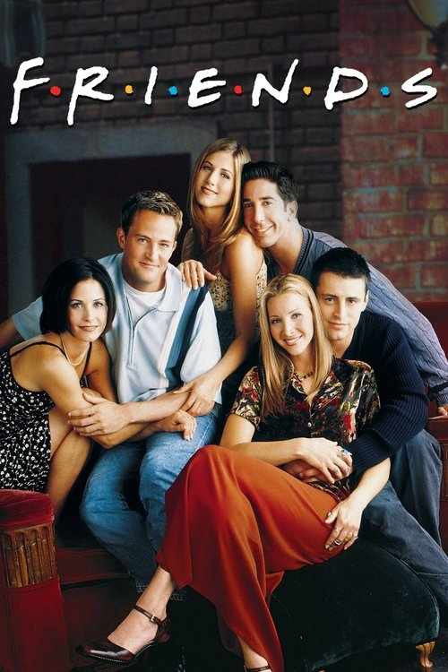

TV Show
Friends
It doesn't challenge you, and that's exactly the point.
Friends is the kind of show I return to when I don't know what to watch, usually alongside Seinfeld. Not because it challenges me, but because it doesn't ask much at all. It's easy to consume, even with half my attention elsewhere, and that effortlessness is part of its comfort. The show doesn't demand focus. It just keeps going, like background noise that occasionally lands a punchline.
What makes Friends work isn't only the jokes, but how uneven the characters are. Some are intentionally funny, some are funny without realizing it, and some are only funny because of how confidently wrong they are. That imbalance gives the show texture. Each character operates based on their own version of reality. A few of those reality maps are accurate. Most of them are deeply flawed.
The humor often comes from watching these characters make decisions that feel completely reasonable to them and completely ridiculous to everyone else. They react, think, and act according to assumptions that don't really hold up, and the show lets those assumptions play out in real time. There's no rush to correct them. The mistake is the point.
That's where the show becomes unintentionally reflective. Seeing their bad decisions unfold on screen makes my own feel just as silly in hindsight. The distance makes it easier to laugh first and recognize later. Friends isn't deep television, but it understands something basic about people: we rarely know we're wrong while we're being wrong. And somehow, that's comforting.